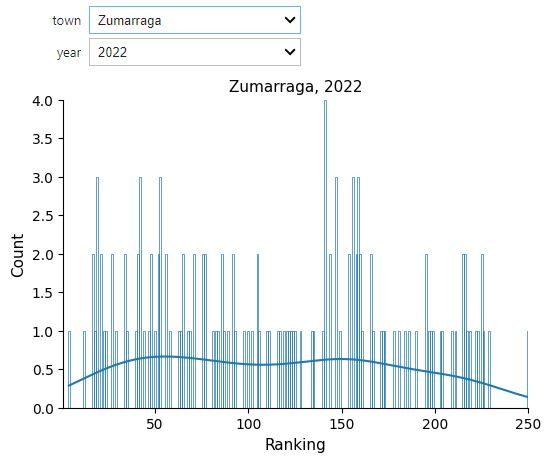

Municipal Indicators#
Feb, 2024
API wrapper for data mining, Data Analysis with interactive apps
Background#
Udalmap is a information system whose purpose is to provide detailed insight into the reality of the 251 municipalities in the Basque Autonomous Community. It consists of over 200 indicators grouped into the following areas:
Economy and competitiveness
Social cohesion and quality of life
Environment and mobility”
Last year, an API was launched for the Udalmap database, and I came up with the idea of writing some functions to ease access to the information. These functions would constitute what is known as a wrapper, a layer that masks the lower-level code and thus simplifies the user’s program. The next logical step would be to prepare it as a module and share it with the community as an installable package on the PyPI site.
Additionally, I thought it would be good to implement a demo web app so that anyone outside the programming realm could make inquiries.
With the wrapper ready, I could carry out my own analysis of some municipal indicators. But, what question did I want to answer with the analysis? Honestly, I couldn’t think of what study to conduct. I was curious to know some data and plot them, but I didn’t know where to focus.
I finally came up with the following question: among the 251 municipalities of Euskadi, does my town stand out in any way? In which indicators does it rank among the top or bottom? And since I was going to consider the rankings, I thought it wouldn’t be a bad idea to compare the relative positions between the two towns where I live (Urretxu and Zumarraga) to find out in what areas one town excels over the other.
Wrapper#
The wrapper functions to handle Udalmap API are organized within a class that I’ve named UdalMap.
Show code cell source
import warnings
import matplotlib.pyplot as plt
import pandas as pd
import requests
class UdalMap:
"""Class to get info from Udalmap API"""
URL_API = "https://api.euskadi.eus/udalmap/"
REQUESTS_OK = 200
def __init__(self):
self.lang = "SPANISH"
def set_lang(self, lang):
"""Changes the language"""
if (lang == "BASQUE") or (lang == "SPANISH"):
self.lang = lang
else:
self.lang = "SPANISH"
warnings.warn("Invalid language! SPANISH assigned")
def groups(self):
"""Gets available groups."""
url = f"{UdalMap.URL_API}groups?lang={self.lang}&summarized=false"
r = requests.get(url)
if r.status_code == UdalMap.REQUESTS_OK:
groups = r.json()
groups_lst = []
for group in groups:
groups_lst.append({"id": group["id"], "name": group["name"]})
# groups_lst.append(group["id"] + ": " + group["name"])
return groups_lst
else:
raise Exception(f"""requests.get(url) returns {r.status_code}""")
def subgroups(self, group_id):
"""Gets available subgroups from a given group."""
# Get valid groups
valid_group_ids = [group["id"] for group in self.groups()]
# Get subgroups
if group_id in valid_group_ids:
url = f"{UdalMap.URL_API}groups/{group_id}/subgroups?lang={self.lang}&summarized=false"
r = requests.get(url)
if r.status_code == UdalMap.REQUESTS_OK:
subgroups = r.json()
subgroups_lst = []
for subgroup in subgroups:
subgroups_lst.append(
{"id": subgroup["id"], "name": subgroup["name"]}
)
return subgroups_lst
else:
raise Exception(f"""requests.get(url) returns {r.status_code}""")
else:
raise Exception(
f"""'group_id' parameter not valid!
Should be one of these: {valid_group_ids}"""
)
def indicators(self, subgroup_id):
"""Gets available indicators from a given subgroup."""
# Get valid subgroups
url = f"{UdalMap.URL_API}subgroups?lang={self.lang}&summarized=false"
r = requests.get(url)
if r.status_code == UdalMap.REQUESTS_OK:
subgroups = r.json()
valid_subgroup_ids = [subgroup["id"] for subgroup in subgroups]
else:
raise Exception(f"requests.get(url) returns {r.status_code}")
# Get indicators
if subgroup_id in valid_subgroup_ids:
url = (
f"{UdalMap.URL_API}subgroups/{subgroup_id}/indicators?lang={self.lang}"
)
r = requests.get(url)
if r.status_code == UdalMap.REQUESTS_OK:
indicators = r.json()
indicators_lst = []
for indicator in indicators:
indicators_lst.append(
{"id": indicator["id"], "name": indicator["name"]}
)
return indicators_lst
else:
raise Exception(f"requests.get(url) returns {r.status_code}")
else:
raise Exception(
f"'subgroup_id' parameter not valid! Should be one of these: {valid_subgroup_ids}"
)
def indicator_name(self, indicator_id):
"""Gets the name of an indicator id."""
url = f"{UdalMap.URL_API}indicators/{indicator_id}?lang={self.lang}"
r = requests.get(url)
if r.status_code == UdalMap.REQUESTS_OK:
indicator = r.json()
return indicator["name"]
else:
raise Exception(f"requests.get(url) returns {r.status_code}")
def data(self, indicator_id, entities):
"""Gets indicator data from selected entities."""
# Get valid indicator
url = f"{UdalMap.URL_API}indicators?lang={self.lang}"
r = requests.get(url)
if r.status_code == UdalMap.REQUESTS_OK:
indicators = r.json()
valid_indicators = [indicator["id"] for indicator in indicators]
else:
raise Exception(f"requests.get(url) returns {r.status_code}")
# Get valid entity
valid_entities = ["entities", "regions", "municipalities"]
# Get the data
if entities in valid_entities:
if indicator_id in valid_indicators:
url = f"{UdalMap.URL_API}indicators/{indicator_id}/{entities}?lang={self.lang}"
r = requests.get(url)
if r.status_code == UdalMap.REQUESTS_OK:
entities = r.json()[entities]
indicatordata_lst = []
for entity in entities:
indicatordata_lst.append(
{
"id": entity["id"],
"name": entity["name"],
"years": entity["years"][0],
}
)
return indicatordata_lst
else:
raise Exception(f"requests.get(url) returns {r.status_code}")
else:
raise Exception(
f"'indicator_id' parameter not valid!\nShould be one of these: {valid_indicators}"
)
else:
raise Exception(
f"'entities' parameter not valid!\nShould be one of these: {valid_entities}"
)
def data_df(self, indicator_id, entities):
"""Gets indicator data from selected entities.
Returns a pandas dataframe"""
entities = self.data(indicator_id, entities)
names = []
years = []
for entity in entities:
names.append(entity["name"])
years.append(entity["years"])
return pd.DataFrame(years, index=names).reset_index()
def data_plot(self, indicator_id, entities, plot_entities=[]):
"""Plots indicator data from selected entities.
Passing a list filters entities to plot"""
df = self.data_df(indicator_id, entities)
df = df.set_index("index")
# Filter entities to plot
if plot_entities != []:
for plot_entity in plot_entities:
if plot_entity not in list(df.index):
raise Exception(f"{plot_entity} not in {list(df.index)}")
df = df.loc[plot_entities, :]
fig, ax = plt.subplots()
df.transpose().plot(ax=ax)
# Title of the plot
title = self.indicator_name(indicator_id)
ax.set_title(title, fontsize=11)
ax.legend(title=None)
return fig
I instantiate an object of that class for the current project.
Show code cell source
import gradio as gr
import ipywidgets as widgets
import numpy as np
import seaborn as sns
# Create an UdalMap class object
udalmap = UdalMap()
Demo app#
I use the Gradio library to implement the web application with which any user can query the indicator data and plot them.
Show code cell source
# gradio app demo
with gr.Blocks() as demo:
## Components ##
# Title
gr.Markdown(
"""
# **Udalmap API**
https://opendata.euskadi.eus/apis/-/apis-open-data/
**demo app** by datuz, 2024
"""
)
# Components in 1st row
with gr.Row():
dropdown_groups = gr.Dropdown(
choices=[group["id"] for group in udalmap.groups()],
label="Select group:",
interactive=True,
scale=0,
)
json_groups = gr.Json(
value=[group["id"] + ": " + group["name"] for group in udalmap.groups()],
label="groups",
)
# Components in 2nd row
with gr.Row():
dropdown_subgroups = gr.Dropdown(
choices=[], label="Select subgroup:", interactive=True, scale=0
)
json_subgroups = gr.Json(label="subgroups")
# Components in 3rd row
with gr.Row():
dropdown_indicators = gr.Dropdown(
choices=[], label="Select indicator:", interactive=True, scale=0
)
json_indicators = gr.Json(label="indicators")
# Components in 4th row
with gr.Row():
radio_entity = gr.Radio(
["entities", "regions", "municipalities"],
label="Select:",
value="entities",
interactive=True,
scale=0,
)
textbox_indicator_name = gr.Textbox(label="Selected indicator")
# Components in 5th row
button_getdata = gr.Button("Get data", scale=0)
# Components in 6th row
dataframe_data = gr.Dataframe(label="dataframe")
# Components in 7th row
with gr.Row():
button_plotdata = gr.Button("Plot data", scale=0)
dropdown_entity_filter = gr.Dropdown(
choices=[], label="Filter:", interactive=True, multiselect=True
)
# Components in 8th row
plot_data = gr.Plot(label="Plot")
## Events ##
# Group selection
def on_group_select(evt: gr.SelectData):
return [
subgroup["id"] + ": " + subgroup["name"]
for subgroup in udalmap.subgroups(evt.value)
], gr.Dropdown(
choices=[subgroup["id"] for subgroup in udalmap.subgroups(evt.value)],
value=None,
)
dropdown_groups.select(
fn=on_group_select, inputs=None, outputs=[json_subgroups, dropdown_subgroups]
)
# Subgroup selection
def on_subgroup_select(evt: gr.SelectData): # SelectData is a subclass of EventData
return [
indicator["id"] + ": " + indicator["name"]
for indicator in udalmap.indicators(evt.value)
], gr.Dropdown(
choices=[indicator["id"] for indicator in udalmap.indicators(evt.value)],
value=None,
)
dropdown_subgroups.select(
fn=on_subgroup_select,
inputs=None,
outputs=[json_indicators, dropdown_indicators],
)
# Indicator selection
def on_indicator_select(indicator):
return indicator + " : " + udalmap.indicator_name(indicator)
dropdown_indicators.select(
fn=on_indicator_select,
inputs=dropdown_indicators,
outputs=textbox_indicator_name,
)
# Get data button
def on_getdata_button(indicator, entity):
df = udalmap.data_df(indicator, entity)
return df, gr.Dropdown(choices=df["index"].tolist())
button_getdata.click(
fn=on_getdata_button,
inputs=[dropdown_indicators, radio_entity],
outputs=[dataframe_data, dropdown_entity_filter],
)
# Plot data button
def on_plotdata_button(indicator, entity, plot_entities):
return udalmap.data_plot(indicator, entity, plot_entities)
button_plotdata.click(
fn=on_plotdata_button,
inputs=[dropdown_indicators, radio_entity, dropdown_entity_filter],
outputs=plot_data,
)
# demo.launch()
This is just a GIF animation of the demo app.
You can access it at Hugging Face Spaces.
The data#
In this project, I use the wrapper to scan through the more than 200 indicators and their corresponding years. I do this only for the municipalities of Urretxu and Zumarraga, calculating for each of the obtained records the position they occupy among all the municipalities of Euskadi.
Show code cell source
# Init
towns = ["Urretxu", "Zumarraga"] # Towns considered
results_lst = []
# Iterate through all groups
group_ids = [group["id"] for group in udalmap.groups()]
for group_id in group_ids:
# Iterate through all subgroups
subgroup_ids = [subgroup["id"] for subgroup in udalmap.subgroups(group_id=group_id)]
for subgroup_id in subgroup_ids:
# Iterate through all indicators
indicator_ids = [
indicator["id"] for indicator in udalmap.indicators(subgroup_id=subgroup_id)
]
for indicator_id in indicator_ids:
# Get indicator data for all municipalities and set index to indicator id number
df = udalmap.data_df(
indicator_id=indicator_id, entities="municipalities"
).set_index("index")
# Iterate through all the columns of the df, i.e. through existing years
for year, data in df.items():
# For each year, reset the index: created new index will serve as ranking position
df_year = data.sort_values(ascending=False).reset_index()
# Iterate through initialized towns
for town in towns:
# Get the record
record = df_year.loc[df_year["index"] == town, :]
# Extract desired data from record
ranking = record.index[0] # index stores ranking pos
value = record.iloc[0, -1]
year = record.columns[-1]
results_lst.append(
{
"town": town,
"indicator": indicator_id,
"year": year,
"value": value,
"ranking": ranking,
"group": group_id,
}
)
# Create pandas dataframe from results
results = pd.DataFrame(results_lst)
# Convert 'year' and 'indicator' columns to integer
results["year"] = results["year"].astype("int")
results["indicator"] = results["indicator"].astype("int")
# Sort
results = results.sort_values(by="year")
print(f"Shape: {results.shape}")
results.head()
Shape: (5632, 6)
| town | indicator | year | value | ranking | group | |
|---|---|---|---|---|---|---|
| 3787 | Zumarraga | 175 | 1991 | 28.92 | 199 | S |
| 3962 | Urretxu | 68 | 1991 | 17.57 | 95 | S |
| 3963 | Zumarraga | 68 | 1991 | 11.03 | 184 | S |
| 3953 | Zumarraga | 70 | 1991 | 60.64 | 111 | S |
| 3952 | Urretxu | 70 | 1991 | 61.43 | 90 | S |
Distribution of rankings#
A histogram of the rankings obtained for each town and for each year can give us some information.
Show code cell source
# Function to plot histogram of rankings
def histplot_rankings(town, year):
# Subset by town and year
df = results.loc[(results["town"] == town) & (results["year"] == year), :]
# Plot
fig, ax = plt.subplots(figsize=(6, 4))
sns.histplot(
data=df["ranking"], ax=ax, stat="count", discrete=True, fill=False, kde=True
)
ax.set_xlabel("Ranking", fontsize=11)
ax.set_ylabel("Count", fontsize=11)
ax.set_title(f"{town}, {year}", fontsize=11)
ax.set_xlim(1, 250)
ax.set_ylim(0, 4)
sns.despine()
plt.show()
# Define years to show
plot_years = results["year"].unique()[
4:
] # discard 1991, 1995, 1996, 1997: non consecutive and scarce data
# Create interactive plot
interactive_plot = widgets.interactive(histplot_rankings, town=towns, year=plot_years)
interactive_plot
In the analysis, I used an interactive chart from the ipywidgets library, but since Jupyter Book does not render them, I show below two screenshots of the results.

According to these charts, at least regarding the year 2022, Urretxu shows a greater quantity of indicators that are close to the mean compared to Zumarraga, which appears to lean slightly more towards the corner of higher rankings (that is, among the top 50, in the chart on the left side). Does that mean that Urretxu is a more “normal” town than Zumarraga? Or does Zumarraga stand out more than Urretxu? Here, one must proceed with caution because depending on the indicator, being in the top positions doesn’t necessarily mean it’s good.
Confronting indicators#
I came up with the idea of comparing the indicators by plotting them on a plane, so that their position intuitively indicated the ranking that Urretxu and Zumarraga occupied in it, while also allowing to see at a glance which of the two was above the other, that is, who was winning in that specific indicator.
I had first to prepare the dataframe for the plotting.
Show code cell source
# Reshape results to show for defined index rankings for each town
rankings = results.pivot_table(
index=["indicator", "year", "group"], columns=["town"], values="ranking"
).reset_index(level=["year", "group"])
print(f"Shape: {rankings.shape}")
rankings.head()
Shape: (2816, 4)
| town | year | group | Urretxu | Zumarraga |
|---|---|---|---|---|
| indicator | ||||
| 0 | 2000 | E | 216.0 | 205.0 |
| 0 | 2005 | E | 201.0 | 197.0 |
| 0 | 2008 | E | 209.0 | 198.0 |
| 0 | 2010 | E | 211.0 | 210.0 |
| 0 | 2012 | E | 204.0 | 223.0 |
Since the position of the points according to the ranking depended on each year, I used an interactive graph that allowed me to select the year and even create an animation covering all the years.
Show code cell source
# Function to plot each indicator
def plot_indicators(year):
# Subset by year and indicator
df = rankings.loc[rankings["year"] == year, :]
# Plot
fig, ax = plt.subplots(figsize=(7, 7))
order = ["E", "S", "M"]
sns.scatterplot(
x="Zumarraga",
y="Urretxu",
data=df,
ax=ax,
alpha=0.8,
hue="group",
hue_order=order,
)
# Draw a diagonal line for better visualize limit
x = np.arange(1, 260)
ax.plot(x, x, color="grey", linewidth=0.4)
ax.grid(axis="both", linewidth=0.5)
ax.set_axisbelow(True)
ax.set_title(f"Indicators in {year}", size=11)
ax.set_xlabel("Zumarraga's rankings", fontsize=12)
ax.set_ylabel("Urretxu's rankings", fontsize=12)
# Legend
h, l = ax.get_legend_handles_labels()
ax.legend(
h,
[
"E: Economía y competitividad",
"S: Cohesión social y calidad de vida",
"M: Medioambiente y movilidad",
],
bbox_to_anchor=(1.0, 0.5),
loc="center left",
fontsize=10,
frameon=False,
)
# Do not show '0' not to confuse about meaning of ranking number 1
ax.set_xlim(1, 260)
ax.set_ylim(1, 260)
# Intuitively higher values better at top and right
ax.invert_yaxis()
ax.invert_xaxis()
# Text to help remember while visualizing data
ax.text(35, 285, "Higher\nranking", fontweight="ultralight", fontsize=9)
ax.text(240, 285, "Lower\nranking", fontweight="ultralight", fontsize=9)
ax.text(290, 30, "Higher\nranking", fontweight="ultralight", fontsize=9)
ax.text(290, 230, "Lower\nranking", fontweight="ultralight", fontsize=9)
# Insert text with indicator number next to each point
for i, row in df.iterrows():
ax.text(row["Zumarraga"], row["Urretxu"], i, size="small")
plt.show()
# Create textbox widget
box = widgets.BoundedIntText(
value=plot_years.min(),
min=plot_years.min(),
max=plot_years.max(),
step=1,
description="Year:",
disabled=False,
)
# Create animation widget
play = widgets.Play(
value=plot_years.min(),
min=plot_years.min(),
max=plot_years.max(),
step=1,
interval=500,
description="Press play",
disabled=False,
)
# Link these widgets
widgets.jslink((play, "value"), (box, "value"))
# Create interactive plot
interactive_plot = widgets.interactive(plot_indicators, year=box)
# Display both
display(interactive_plot)
display(play)
But Jupyter Book doesn’t render these interactivities of ipywidgets library, so I’ll place a GIF animation of them instead.
And here’s a screenshot of 2022 for a calmer analysis.

So, the indicators placed towards the right (for Zumarraga) and upwards (for Urretxu) indicate that respectively they enjoy a better ranking position for that specific indicator.
Additionally, the diagonal line separates the indicators in which each town obtains the highest positioning with respecto to the other, and the farther away the point is from this line, the greater the difference in the ranking these towns occupy in that specific indicator.
So let’s take a look at some of them:
Show code cell source
results_2022 = results.loc[results["year"] == 2022, :]
def show_indicator(indicator_id):
print(f"{indicator_id}: {udalmap.indicator_name(indicator_id)}")
print(results_2022.loc[results_2022["indicator"] == indicator_id, :])
show_indicator(80)
80: Edificios de viviendas familiares principales con instalación de gas por tubería (%)
town indicator year value ranking group
4804 Urretxu 80 2022 97.1 2 S
4805 Zumarraga 80 2022 96.1 4 S
80: Both Urretxu and Zumarraga seem to be superpowers in pipeline gas installation, as they respectively hold the second and fourth positions among all municipalities regarding this indicator.
Show code cell source
show_indicator(67)
67: Densidad de viviendas en suelo residencial (Viviendas/Ha.)
town indicator year value ranking group
4265 Zumarraga 67 2022 95.00 21 S
4264 Urretxu 67 2022 92.27 22 S
67: It’s no surprise to me that we’re up in this aspect, as it has always seemed to me that the population density is very high here.
Show code cell source
show_indicator(30)
30: Densidad comercial minorista (‰ habitantes)
town indicator year value ranking group
2539 Zumarraga 30 2022 11.07 21 E
2538 Urretxu 30 2022 10.30 28 E
30: As for the density of retail stores, we are also well positioned.
Let’s take a look at the indicators that yield opposite rankings for both towns. Which is that lonely 73 and why is it there all alone?
Show code cell source
show_indicator(73)
73: Viviendas protegidas (VPO) terminadas en el último quinquenio (‰ habitantes)
town indicator year value ranking group
3784 Urretxu 73 2022 3.53 20 S
3785 Zumarraga 73 2022 0.00 250 S
73: As for the completed protected housing units in the last five years, Urretxu is doing very well while Zumarraga is doing very poorly.
Show code cell source
show_indicator(77)
77: Superficie residencial urbanizable (%)
town indicator year value ranking group
4302 Urretxu 77 2022 0.00 249 S
4303 Zumarraga 77 2022 11.13 102 S
77: It seems that there is no remaining urbanizable residential area in Urretxu, while Zumarraga occupies an intermediate position in this regard.
So we could continue analyzing which indicators are above average and which ones occupy lower positions, besides seeing in which indicators these two towns are distant. This information could be useful for assessing the situation of both municipalities.
Evolution of indicators#
The goal in this section would be to comparatively analyze, as in the previous section, the temporal evolution of certain indicators individually.
First I prepare the dataframe to later complete the plotting.
Show code cell source
# Reshape results to show for defined index values for each town
values = results.pivot_table(
index=["indicator", "year", "group"], columns=["town"], values="value"
).reset_index(level=["year", "group"])
print(f"Shape: {values.shape}")
values.head()
Shape: (2810, 4)
| town | year | group | Urretxu | Zumarraga |
|---|---|---|---|---|
| indicator | ||||
| 0 | 2000 | E | 0.4 | 0.5 |
| 0 | 2005 | E | 0.4 | 0.4 |
| 0 | 2008 | E | 0.3 | 0.3 |
| 0 | 2010 | E | 0.3 | 0.3 |
| 0 | 2012 | E | 0.3 | 0.2 |
Here I also made use an interactive graph that allowed me to select the indicator as well as the year and even create an animation covering all data-existing years.
Show code cell source
# Function to plot each indicator
def plot_indicator(year, indicator):
# Subset by year and indicator
df = rankings.loc[(rankings["year"] == year) & (rankings.index == indicator), :]
# Plot
fig, ax = plt.subplots(figsize=(5, 5))
order = ["E", "S", "M"]
sns.scatterplot(
x="Zumarraga",
y="Urretxu",
data=df,
ax=ax,
alpha=0.8,
hue="group",
hue_order=order,
)
# Define the base size of all the points
try: # Raises error if there is no plot
ax.collections[0].set_sizes([200])
except:
pass
# Draw a diagonal line for better visualize limit
x = np.arange(1, 260)
ax.plot(x, x, color="grey", linewidth=0.4)
ax.grid(axis="both", linewidth=0.5)
ax.set_axisbelow(True)
ax.set_title(
f"Indicator: {indicator}\n'{udalmap.indicator_name(indicator)}'\n{year}",
size=11,
)
ax.set_xlabel("Zumarraga's rankings", fontsize=12)
ax.set_ylabel("Urretxu's rankings", fontsize=12)
# Remove legend because appears and desappears if there is or isn't a plot
try: # If there is no legend it raises attribute error
ax.get_legend().remove()
except:
pass
# Do not show '0' not to confuse about meaning of ranking number 1
ax.set_xlim(1, 260)
ax.set_ylim(1, 260)
# Intuitively higher values better at top and right
ax.invert_yaxis()
ax.invert_xaxis()
# Text to help remember while visualizing data
ax.text(35, 285, "Higher\nranking", fontweight="ultralight", fontsize=9)
ax.text(240, 285, "Lower\nranking", fontweight="ultralight", fontsize=9)
ax.text(290, 30, "Higher\nranking", fontweight="ultralight", fontsize=9)
ax.text(290, 230, "Lower\nranking", fontweight="ultralight", fontsize=9)
# Insert text with values next to each point
values_subset = values.loc[
(values["year"] == year) & (values.index == indicator), :
]
# Adjust these text positions
pos_urr = 30
pos_zum = -10
for i, row in df.iterrows():
ax.text(
row["Zumarraga"] + pos_urr,
row["Urretxu"],
values_subset.loc[i, "Urretxu"],
size="small",
)
ax.text(
row["Zumarraga"] + pos_zum,
row["Urretxu"],
values_subset.loc[i, "Zumarraga"],
size="small",
)
plt.show()
# Create textbox widget
box = widgets.BoundedIntText(
value=plot_years.min(),
min=plot_years.min(),
max=plot_years.max(),
step=1,
description="Year:",
disabled=False,
)
# Create animation widget
play = widgets.Play(
value=plot_years.min(),
min=plot_years.min(),
max=plot_years.max(),
step=1,
interval=500,
description="Press play",
disabled=False,
)
# Link these widgets
widgets.jslink((play, "value"), (box, "value"))
# Create interactive plot
indicator = np.sort(results["indicator"].unique())
interactive_plot = widgets.interactive(plot_indicator, year=box, indicator=indicator)
# Display both
display(interactive_plot)
display(play)
These are some examples of indicators for which I wanted to have comprehensive visual information about the position occupied by the two towns.
The total population and the population density. See that actual values are displayed on both sides of the point (Urretxu on the left, Zumarraga on the right). As indicated by these values, the point lies below the diagonal for the total population, indicating that Zumarraga has more inhabitants than Urretxu. But not for the density, with Urretxu leading Zumarraga. With respect to their position, it is observed that these towns are denser than populous, although they are quite high in the ranking in both parameters.
The retail commercial area per inhabitant is decreasing in both towns, leading to a loss in ranking. It is also noticeable that in Urretxu, the number was higher, but in recent years, it tends to equalize with Zumarraga. With regards to bars and restaurants, it is evident that Urretxu has always had more establishments of this kind than Zumarraga. I thought the number of them per inhabitant was high, but I discover that in the ranking, they are mostly positioned in the average.
Finally, I take a look at two parameters in the Mobility and Environment area. The vehicle fleet per inhabitant appears below average. And the area of parks and gardens per person is extremely low in Urretxu, as I expected, since with the existing urban density, there is no space for them.
Conclusion#
Through this project, I aimed to bring municipal indicator data to the public eye, which, despite being available, are not always easily accessible.
First, I prepared some functions to access the API more conveniently. Using them as a foundation, I programmed a demo application ready to be used by any citizen.
As for the analysis, I focused on the towns where I live, looking for indicators that made them stand out from the average and finally analyzing the temporal evolution of a handful of those indicators.
Personally, without a specific goal or question to answer, this project satisfied my curiosity. However, I believe that these tools can be very useful for use in specific studies where one wants to comparatively analyze the development of municipalities.